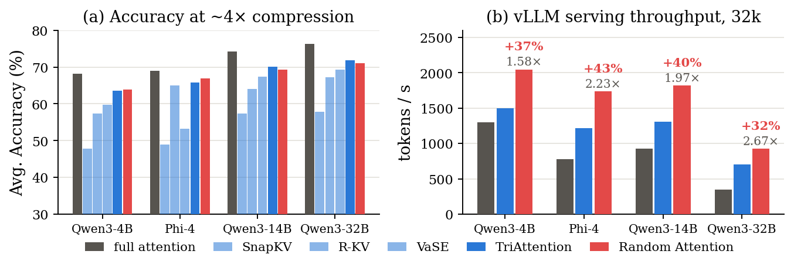
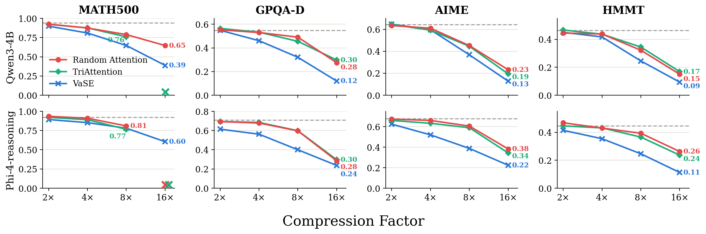
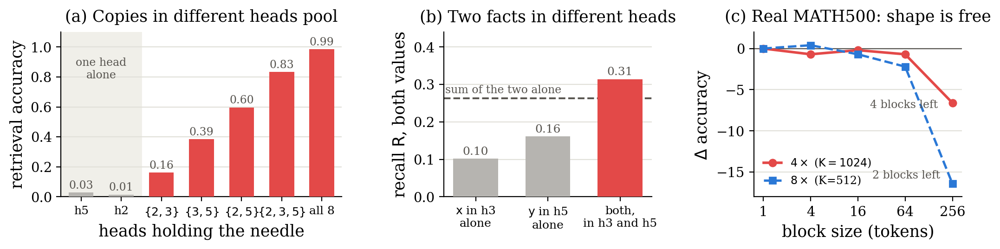

TL;DR — Every KV cache eviction method scores cached tokens and keeps the top-K.
We drop the score entirely: keep the prompt, evict the rest uniformly at random
within each attention head.
Across four reasoning models and six tasks, it matches the strongest prior evictor
— and is significantly ahead in 31 of 60 main-table comparisons, behind in one.
It never runs a scoring pass, so in vLLM serving it delivers
32–43% more tokens per second than the strongest baseline at 32k-token generations.
Why it works: the prompt is the fragile part of the cache, and
the reasoning trace protects itself — restated in the text, copied across heads.
Prior evictors vs. Random Attention. Left: every existing method runs a
scoring pass and keeps the top-K scored tokens in each head (struck-through cells are evicted).
Only the sink tokens are kept by rule; the rest of the question competes by score — TriAttention
pins the whole prompt, but SnapKV, R-KV and VaSE leave it to the score, and an evicted prompt
token cannot be re-derived. Right: Random Attention pins the prompt and samples the generated
trace uniformly at random, independently in each KV head — no scores are ever computed, and the
per-head draws leave redundant copies of the trace in the cache.
The result
The selection signal contributes almost nothing
We evaluate at a roughly 4×-compressed cache budget on MATH500, GPQA-Diamond, AIME 2025,
AIME 2026, HMMT and LiveCodeBench, on Qwen3-4B/14B/32B and Phi-4-reasoning, with matched budgets
and paired significance tests throughout. Random Attention matches the strongest prior evictor on
every model, is significantly ahead of a baseline in 31 of the 60 main-table comparisons, and is
significantly behind in exactly one (code reasoning on Qwen3-32B, explained below).

(a) Mean accuracy over the six tasks: Random Attention (red) vs. SnapKV, R-KV,
VaSE and TriAttention at the same cache budget, with full attention dashed.
(b) vLLM serving throughput at 32k-token generations: labels give the multiple over paged
full attention and the margin over TriAttention.
MATH500K=1024
GPQA-DK=2048
AIMEK=4096
HMMTK=4096
LCBK=3072
Qwen3-4B
Full attention
0.939
0.562
0.642
0.462
0.807
SnapKV
0.703
0.369
0.418
0.395
0.507
R-KV
0.810
0.482
0.494
0.371
0.712
VaSE
0.809
0.461
0.596
0.421
0.700
TriAttention
0.864
0.533
0.592
0.437
0.755
Random Attention (ours)
0.874
0.530
0.610
0.438
0.744
Phi-4-reasoning
Full attention
0.922
0.707
0.677
0.444
0.697
SnapKV
0.844
0.442
0.502
0.343
0.314
R-KV
0.909
0.636
0.643
0.440
0.621
VaSE
0.853
0.562
0.520
0.354
0.373
TriAttention
0.891
0.684
0.633
0.431
0.652
Random Attention (ours)
0.910
0.678
0.662
0.430
0.667
Qwen3-32B
Full attention
0.950
0.703
0.715
0.559
0.886
SnapKV
0.816
0.476
0.541
0.450
0.609
R-KV
0.857
0.638
0.613
0.472
0.779
VaSE
0.868
0.597
0.680
0.524
0.797
TriAttention
0.887
0.683
0.677
0.508
0.834
Random Attention (ours)
0.891
0.683
0.664
0.509
0.806
The main grid: accuracy at each task's ~4× compression (LCB ~3×);
K is the per-head KV budget. Bold: best eviction method per column;
greyed: significantly below Random Attention (paired clustered
bootstrap + sign test, 95%). AIME pools 2025 and 2026; every number is the mean over
independently sampled runs.
Pushing compression harder does not change the ordering. From 2× to 16×, on both
model families, Random Attention stays tied with TriAttention while the gap from both to VaSE
opens — compression pressure widens the gap in the random policy's favour.

Accuracy from 2× to 16× compression on Qwen3-4B and Phi-4-reasoning;
dashed lines mark full attention. At 2× every method sits near full attention; as the
budget tightens, Random Attention stays tied with TriAttention while VaSE falls away. The
✕ marks budgets smaller than the prompt itself, which Random Attention scopes out.
Mechanism I
The prompt is the fragile part of the cache
Methods disagree about the prompt: TriAttention keeps the whole input by default, while
SnapKV, R-KV and VaSE keep only sink tokens and leave every slot to the score. Giving every
method the same rule — keep the prompt, score only the generated trace — separates the score
from the protection, and the rule pays each method almost exactly as much of the question as its
score had been losing: SnapKV, whose score retains the least of the prompt, gains up to
+22.5 points; R-KV, which already retains the most, never gains more than 1.9. Once every
method keeps the prompt, the three baselines land within 2.2 points of one another in every
setting — and every learned score still trails the policy that ranks nothing.
Losing the prompt is catastrophic; cutting the trace at random is not.
That is what makes the prompt the fragile part of the cache.
Mechanism II
The reasoning trace protects itself
Why does random eviction of the trace not hurt? Because the trace is stored redundantly at two
levels. In the text: the model restates the intermediates it still needs as it works, so
a needed value usually has a recent copy. Across attention heads: every head holds its
own copy of every token, and eviction decides per head which copies die — a token is only lost
when every head happens to drop it. A planted-fact probe makes the second level visible:
we insert a synthetic fact into real reasoning traces 1,536 tokens before a question that needs
it (15 eviction rounds pass in between) and control which KV heads keep it. A fact surviving in
a single head is almost never retrieved (3%), while the same fact surviving in several heads is
retrieved almost always (99% with all eight) — and the shape of the surviving copies
barely matters.

The planted-fact probe. (a) Retrieval accuracy grows with the number of heads
holding the fact, from 0.03 (one head) to 0.99 (all eight). (b) Two facts held in different
heads are both recovered more often than the sum of either alone. (c) On real MATH500
traces, evicting in contiguous blocks of 1–64 tokens changes nothing: the draw's shape is free.
The boundary
What is left for a selection signal
The one case a signal-free policy cannot cover is a fact stated once, never restated, and
needed much later — the case redundancy cannot reach. In a passcode probe (announced once, 57
eviction rounds before the question), Random Attention never reproduces it, while R-KV — whose
score accumulates attention over the whole history — finds it 84% of the time. Needle-finding is
real selection skill, but it neither implies nor follows from aggregate strength: R-KV, the best
needle-finder, leads only one column of the main grid, and TriAttention, the strongest baseline
there, recovers almost nothing. On real traces the case is rare, because the model keeps
restating what it is still using. The other honest cost is code reasoning: prompts average 557
tokens (six times MATH500's), so pinning them consumes a large share of the budget — the setting
behind the single significant baseline win.
Serving
No scoring pass means real speed
Random Attention needs no calibration, no tuning, and no per-step scoring. Under paged vLLM
serving it delivers 1.6–2.7× full-attention throughput across the four models —
32–43% more than TriAttention on the same kernels at 32k-token generations, a margin
that holds at capacity. In an iso-memory benchmark (largest batch fitting one H200), the
compressed cache fits 109–200 concurrent sequences where full attention fits 20–28,
and Random Attention reaches 10× full-attention throughput at K=3072 and 28.8× at
MATH500's tighter K=1024. It is also the baseline any new selection signal has to beat, at
matched budget and matched prompt protection.
+32–43%
tokens/s over the strongest baseline (vLLM, 32k generations)
Two practical implications follow. First, Random Attention is a deployable method in its
own right: it needs no calibration, no tuning and no scoring pass, and it is the fastest
evictor we measured at equal accuracy — a reasonable default for serving reasoning models under
a memory budget, and the baseline any new selection signal has to beat at matched budget and
matched prompt protection. Second, the findings redirect what eviction research should
optimise: the accuracy of an evictor is decided by what it protects, not by how it ranks
the rest.
That moves the open questions to where protection still matters:
Budgeting long prompts. On code reasoning, pinning the whole prompt consumes a
large share of the cache budget, yet much of a code prompt is scaffolding (I/O formats,
harness instructions) that a smarter rule might compress rather than pin whole. We leave this
to future work, since Random Attention's value as a null lies in having nothing to tune.
Recovering rare once-stated facts. A fact stated once, never restated, and needed
much later is the one case only a content-dependent signal can preserve — real selection
skill, but one that current aggregate benchmarks neither reward nor measure.
Use it
Try it on your own model
The repository contains
the eviction engine (every method in the paper as an eviction mode), the evaluation harness, the
paired significance tests, the efficiency benchmarks and the vLLM port.
git clone https://github.com/SalesforceAIResearch/Random-Attention && cd Random-Attention
bash setup.sh && . env.sh
# one (model, task, method, budget) accuracy cell
scripts/run_cell.sh Qwen3-4B math random_pp # Random Attention, K defaults to the ~4x point
scripts/run_cell.sh Qwen3-4B math triattn # strongest baseline, per-model calibration
scripts/grade_cell.sh Qwen3-4B math
Citation
BibTeX
@article{wang2026random,
title = {Random Attention: Rethinking KV Cache Eviction for Efficient Reasoning},
author = {Wang, Heng and others},
journal = {arXiv preprint},
year = {2026}
}
References
Key references
Zhang et al. "H2O: Heavy-Hitter Oracle for Efficient Generative Inference of Large Language Models." NeurIPS 2023.
Li et al. "SnapKV: LLM Knows What You are Looking for Before Generation." NeurIPS 2024.
Cai et al. "R-KV: Redundancy-aware KV Cache Compression for Reasoning Models." NeurIPS 2025.
Chang et al. "Value-Aware Stochastic KV Cache Eviction for Reasoning Models (VaSE)." arXiv:2606.03928.
Mao et al. "TriAttention: Efficient Long Reasoning with Trigonometric KV Compression." ICML 2026.
Xiao et al. "Efficient Streaming Language Models with Attention Sinks." ICLR 2024.
Kwon et al. "Efficient Memory Management for Large Language Model Serving with PagedAttention." SOSP 2023.
Wang. "How Much Cache Does Reasoning Need? Depth-Cache Tradeoffs in KV-Compressed Transformers." arXiv:2604.17935.